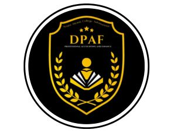
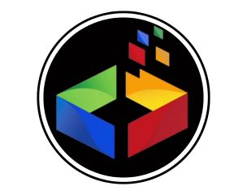
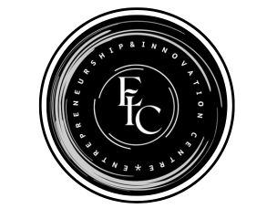
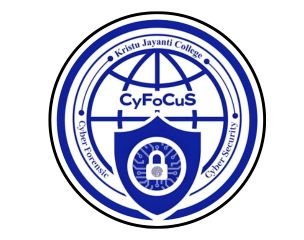
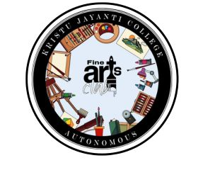
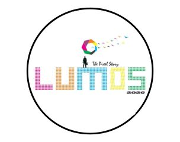
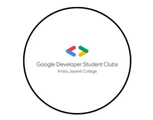
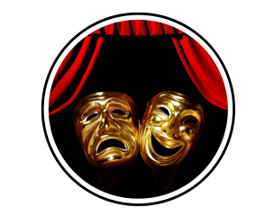
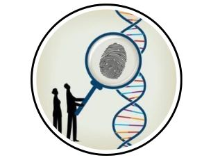

CS DEPT
About Us
The Computer Academy at Kristu Jayanti College's Department of Computer Science (UG) has over 800 members, fostering skills through curricular and extracurricular activities. It offers interactive sessions on diverse tech topics and organizes events like "Synchronize" and "Xactitude," enriching students' education with industry insights..

DPAF
About Us
The Department of Professional Accounting and Finance (DPAF) at Kristu Jayanti College equips students with essential financial and accounting skills. Through rigorous coursework and practical training, it prepares students for professional success, offering opportunities in diverse financial sectors. The department fosters analytical thinking, ethical practices, and industry readiness.

KJSDC
About Us
Kristu Jayanti College established a Software Development Centre for in-house software development in collaboration with CUFA India Limited. This IT company provides technical support, guidance, and training. The centre will conceptualize, design, and develop software solutions tailored to the specific requirements of Kristu Jayanti College.

EIC CLUB
About Us
The Entrepreneur Club at Kristu Jayanti College fosters entrepreneurial spirit among students by offering a platform for innovative thinking, business acumen, and leadership development. Whether you aspire to start a business, have a passion for sales, or want to enhance marketing skills, our club is perfect for you.

Cyber CLUB
About Us
The KJC Cybersecurity Club at Kristu Jayanti College is a community of students passionate about cybersecurity. Our mission is to equip members with knowledge, skills, and practical experience to defend against cyber threats. We offer hands-on workshops, expert seminars, and collaborative projects covering ethical hacking, network security, and digital forensics.

FINE ARTS
About Us
The Fine Arts Club at Kristu Jayanti College nurtures creative talents in painting, sculpture, photography, and more. We provide workshops, collaborative projects, and artistic expression opportunities. Members craft decor for college events, enhancing their skills and transforming spaces with innovative designs, while learning teamwork and project management.

MEDIA
About Us
The Media Club at Kristu Jayanti College enhances students' media literacy and skills through workshops, guest lectures, and hands-on projects. It offers opportunities in photography, videography, journalism, and social media management, preparing members for careers in media. The club fosters creativity, collaboration, and industry awareness.

GDSC
About Us
The Google Development Student Club (GDSC) at Kristu Jayanti College is a dynamic community fostering innovation and collaboration among technology enthusiasts. Dedicated to empowering students with skills in web development, graphic design, and media production, our specialized groups delve into robust web applications, stunning visuals, and effective communication, ensuring hands-on experience and impactful outreach through cutting-edge projects and activities.

BBA PMS
About Us
Our BBA Club is a vibrant community of Bachelor of Business Administration students dedicated to fostering leadership, innovation, and professional growth. We strive to bridge the gap between academic knowledge and real-world business practices through a variety of engaging activities and initiatives.
ERUDITE CLUB
About Us
Erudite Club is the literary and cultural club of the Department of English. It aims to develop and sharpen students' literary skills, provide a platform for creative expressions, link classroom learning with global cultures, and promote interactive learning through cultural exchanges, enriching students' academic and cultural experiences.

THEATRE CLUB
About Us
The Kristu Jayanti College Theatre Club enriches campus life with vibrant performances, fostering creativity and expression among students. Known for its diverse repertoire ranging from classic dramas to avant-garde productions, the club cultivates a supportive environment for budding actors, directors, and stage enthusiasts, creating memorable theatrical experiences for the college community.
PSYCHOLOGY
About Us
The Psychology Club at Kristu Jayanti College caters to students passionate about psychology and personal growth. With a vision to explore individuals' multidimensionality and a mission to promote psychological study across diverse fields, we aim to impart knowledge, foster uniqueness, and enhance both extrinsic and intrinsic behaviors.
.jpg)
WRITERS ASSOCIATION
About Us
Kristu Jayanti Writers Association thrives in an academic environment promoting creativity and critical thinking. With a diverse community and innovative teaching methods, the association fosters holistic development. Emphasizing leadership and social responsibility, it prepares students for global challenges through practical skills and industry partnerships, fostering integrity and inclusivity for meaningful societal contributions.

LIFE SCIENCE
About Us
The Life Science Club at Kristu Jayanti College is a vibrant community dedicated to fostering a deep appreciation for biology and its applications. Through workshops, seminars, and field trips, we explore genetics, microbiology, and environmental studies. Join us to discover the wonders of life sciences and contribute to advancing scientific knowledge and environmental stewardship.
LAW DEPT
About Us
The Kristu Jayanti College Law Department stands as a beacon of legal education, blending academic rigor with practical experience. It offers comprehensive programs to deepen understanding of legal principles and their real-world application. Faculty mentorship emphasizes holistic development, nurturing ethical, socially responsible legal professionals through innovative teaching and a commitment to excellence.
JOURNALISM CLUB
About Us
The Kristu Jayanti College Journalism Club fosters a passion for storytelling and media literacy among students. Through workshops, field trips, and hands-on experiences, members explore diverse aspects of journalism, from investigative reporting to digital media. The club encourages ethical journalism practices and empowers members to engage critically with contemporary issues, shaping future media professionals.